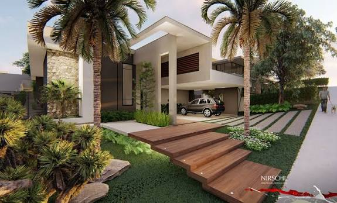
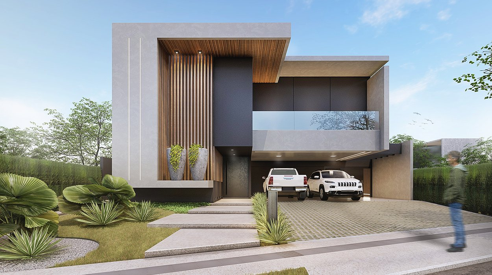
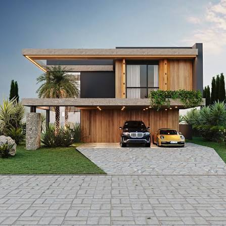

Projetos publicados
12↗ 2 este mêsTERÇA-FEIRA, 29 DE JULHO
Olá, Kamylle ✦
Acompanhe o que está acontecendo no seu portfólio.
Serviços ativos
4Todos atualizadosDepoimentos
8↗ 1 novo esta semanaMensagens novas
3● Requer atençãoProjetos recentes
Últimas alterações no portfólio

Refúgio UrbanoInteriores · São Paulo, SP
Publicado
Casa HorizonteResidencial · Ribeirão Preto, SP
Publicado
Ateliê AlmaComercial · Campinas, SP
RascunhoAtividade recente
O que mudou por aqui
Refúgio Urbano foi atualizadoHoje, às 10:32
Novo depoimento de Camila FerreiraOntem, às 17:26
Alterações em Sobre mim publicadas28 de julho, às 09:15
Serviço Consultoria atualizado25 de julho, às 13:41
PORTFÓLIO
Meus projetos
Gerencie os projetos exibidos no seu site.
| Projeto | Categoria | Última edição | Status | Ações |
|---|---|---|---|---|
Refúgio UrbanoSão Paulo, SP | Interiores | Hoje, 10:32 | Publicado | |
Casa HorizonteRibeirão Preto, SP | Residencial | 28 jul, 15:10 | Publicado | |
Ateliê AlmaCampinas, SP | Comercial | 22 jul, 09:45 | Rascunho | |
Casa IpêAraraquara, SP | Residencial | 18 jul, 11:20 | Publicado |
INSTITUCIONAL
Sobre mim
Edite a apresentação que aparece em seu site.
CONTEÚDO
Serviços
Organize os serviços oferecidos no seu estúdio.
Projeto arquitetônico
01Desenvolvimento de projetos personalizados que unem estética, funcionalidade e conforto.
Projeto de interiores
02Criação de ambientes internos harmoniosos, sofisticados e funcionais.
Acompanhamento de obras
03Suporte técnico durante toda a execução da obra, garantindo qualidade e fidelidade.
Consultoria arquitetônica
04Orientação especializada para otimizar espaços, escolhas e investimentos.
CONTEÚDO
Depoimentos
Gerencie as histórias compartilhadas por seus clientes.
MA
Mariana AlvesProjeto Residencial
“Fiquei encantada com o resultado do projeto. O atendimento foi atencioso desde o início e cada detalhe foi pensado para deixar minha casa mais funcional e acolhedora.”
RM
Ricardo MonteiroCasa Horizonte
“O acompanhamento da obra trouxe muita segurança durante todo o processo. O projeto foi executado exatamente como planejado e o resultado superou minhas expectativas.”
CF
Camila FerreiraConsultoria arquitetônica
“A consultoria arquitetônica foi essencial para aproveitar melhor os espaços do meu apartamento. Recebi orientações práticas, criativas e totalmente alinhadas ao meu estilo.”
PREFERÊNCIAS
Configurações
Administre as informações e a segurança da sua conta.
Sair do painel
Encerre sua sessão neste dispositivo.
Você precisará informar seu usuário e senha novamente para acessar o painel.
Sair da contaNOVO PROJETO
Adicionar projeto
Preencha as informações que serão exibidas no portfólio.